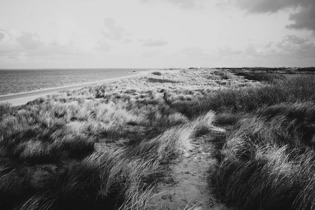
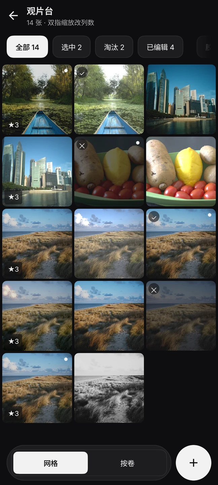
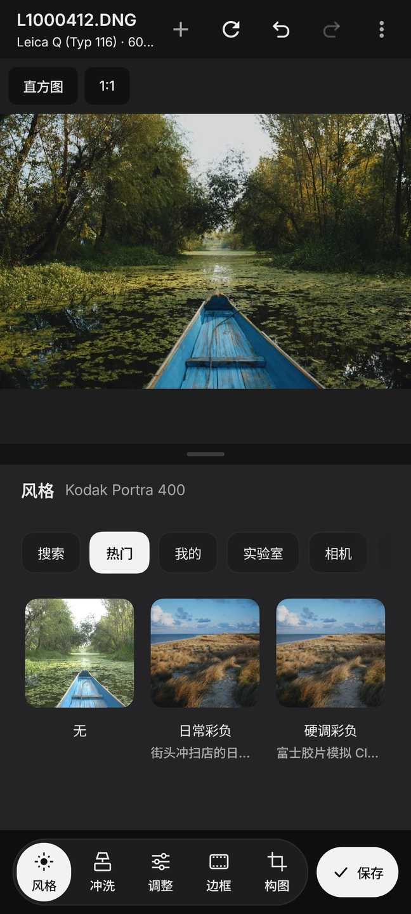
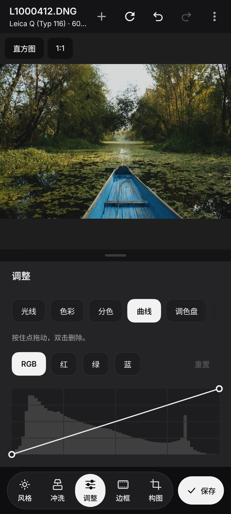

RAW 解码
使用 LibRaw 0.22.2。DNG 按拍摄白平衡在双光源矩阵间插值，小米和 Pixel 的 DNG 会应用文件自带的镜头阴影校正。也可以打开手机拍的 JPEG、HEIC、PNG 和 WebP。
- DNG
- CR3
- NEF
- ARW
- RAF
- RW2
- ORF
- HEIC
0.2.00-alpha-8 Android 10+ · arm64
Android 上的胶片冲印模拟
按负片曝光、显影、放大到相纸、扫描的顺序处理 RAW 和手机照片，胶片和相纸用的是实测的特性曲线和光谱灵敏度。计算在手机 GPU 上进行，照片不上传。
 中性解码
Kodak Portra 400
中性解码
Kodak Portra 400
Films
六张图来自同一个 Ricoh GR III RAW 文件，只换了胶片和相纸。除了色彩，高光压缩、颗粒和光晕也随胶片变化。

长边 1600 px 渲染，颗粒相对画面比全尺寸导出粗。负片样张用 Kodak Portra Endura 相纸渲染，应用现在默认用 Kodak Supra Endura，效果会略有不同。渲染参数与复现方法 →
Process
渲染引擎来自 SpektraLab，胶片模型来自 spektrafilm。每张照片依次经过下面六步，颗粒、光晕和相纸眩光都由胶片与相纸的物理参数计算，不查表。
LibRaw 把 RAW 解码到线性 ProPhoto RGB。
按胶片的光谱灵敏度，计算蓝、绿、红三层乳剂各自的曝光量。
用特性曲线把曝光量换算成密度。颗粒和光晕在这一步生成，尺度取决于画幅。
放大机光源透过负片曝光相纸，可用黄、品红滤镜校色。
相纸的特性曲线决定最终反差，相纸眩光在这一步加入。
转换到屏幕或导出色域，保存为 JPEG、16-bit TIFF 或 HEIF。
CineStill 800T 是去掉防光晕层的电影胶片。强光穿过乳剂后在片基背面反射，再次曝光乳剂，亮部边缘出现红色光晕。Portra 400 有防光晕层，同一画面没有这种光晕。
Fujifilm X100F · RAF · 左起：中性解码、Portra 400、CineStill 800T
Interface
可以只选风格、调强度、加边框后保存，也可以继续调曲线、色轮和蒙版。两种操作改的是同一份编辑记录。



截图由 Alpha 8 的 CI 截图任务生成，使用测试数据，不是手机屏摄。
Features
使用 LibRaw 0.22.2。DNG 按拍摄白平衡在双光源矩阵间插值，小米和 Pixel 的 DNG 会应用文件自带的镜头阴影校正。也可以打开手机拍的 JPEG、HEIC、PNG 和 WebP。
87
分八组。每款设定胶片、相纸、放大参数和效果，强度可调，可以按名称或“富士味”这类俗称搜索。
16-bit
可选 sRGB、Display P3、ProPhoto RGB、Adobe RGB (1998)，嵌入对应 ICC。JPEG 可选 sRGB 或 P3，设备有编码器时可存 HEIF。
白平衡、曝光、高光、阴影、八段 HSL、色轮和曲线。线性、径向和画笔蒙版可以把调整限制在局部。
135、半格、XPan、6×6、6×7 等片边，带齿孔和片基字样；另有拍立得和参数条。参数条按 EXIF 识别 33 个相机和手机品牌。
支持 .cube、HaldCLUT、Lightroom 预设和富士配方，无法转换的项目会列出来。当前风格可以导出为 .spklook。
导出在单独的线程排队，编辑时也可以进行。文件先在相册占位，写完并校验后才公开；进程被系统结束后，下次启动会继续。“极致渲染”按原始分辨率输出 4:4:4 JPEG。
没有统计、广告和账号。唯一的网络请求是向本仓库的 GitHub Releases 检查新版本。导出默认不写入拍摄位置。
Parity
胶片引擎直接使用上游代码。我们用同一组输入，把 Android 的输出和上游 Linux 宿主程序的输出逐像素比较。
43
组对照，RAW、合成图与手机 JPEG
0.000
RAW 导出平均 ΔE00（最大 ≤ 0.015）
≤ 0.016
手机 JPEG / P3 导出平均 ΔE00
数据在云主机的软件 GPU（Mesa lavapipe）上测得，还没有在 Adreno 手机上大规模验证，也没有和 macOS 版直接比较。macOS 版用 Apple 的 RAW 解码，结果本来就与 LibRaw 不同。方法与完整数据 →
Devices
C++20 引擎用 NDK 编译，通过 Vulkan 计算着色器在 GPU 上运行。适配针对小米数字系列的骁龙和 Adreno 驱动：大图拆成小批提交，首次运行时探测单块缓冲上限，再决定工作尺寸。
列表是适配目标，不代表已验证。目前只有小米 13 Ultra 做过真机测试。其他 Android 10 以上、支持 Vulkan 的 arm64 手机应该也能运行，但没有专门优化。逐机型限制与风险 →
Download
安装包只在 GitHub Releases 发布，免费。其他渠道收费出售的不是官方版本。
0.2.00-alpha-8 · 2026-11-15 · arm64-v8a · Android 10+
下载 arm64-v8a.apk 和同一页的 SHA256SUMS，核对哈希和签名指纹。
sha256sum -c SHA256SUMS第一次安装需要允许浏览器或文件管理器安装应用。以后的版本可以直接覆盖安装，编辑和风格会保留。
应用会检查新版本，下载后核对 SHA256SUMS 和签名再安装。用 Obtainium 订阅时需要打开 Include prereleases，因为目前都是预发布版。